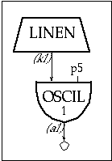

Although in the second instrument we could control and vary the overall amplitude from note to note, it would be more musical if we could contour the loudness during the course of each note. To do this we'll need to employ an additional unit generator linen, which the Csound reference manual defines as follows:
kr linen kamp, irise, idur, idec
ar linen xamp, irise, idur, idec
linen is a signal modifier, capable of computing its output at either control or audio rates. Since we plan to use it to modify the amplitude envelope of the oscillator, we'll choose the latter version. Three of linen's arguments expect i-rate variables. The fourth expects in one instance a k-rate variable (or anything slower), and in the other an x-variable (meaning a-rate or anything slower). Our linen we will get its amp from p4.
The output of the linen (k1) is patched into the kamp argument of an oscil. This applies an envelope to the oscil. The orchestra and score files now appear as:
instr 3
k1
linen
p4, p6, p3, p7
; p4=amp
a1
oscil
k1, p5, 1
; p5=freq
out
a1
; p6=attack time
endin
; p7=release time
f1
0
4096
10
1
; sine wave
;instr
start
duration
amp(p4)
freq(p5)
attack(p6)
release(p7)
i3
0
1
10000
440
.05
.7
i3
1.5
1
10000
440
.9
.1
i3
3
1
5000
880
.02
.99
i3
4.5
1
5000
880
.7
.01
i3
6
2
20000
220
.5
.5
e
